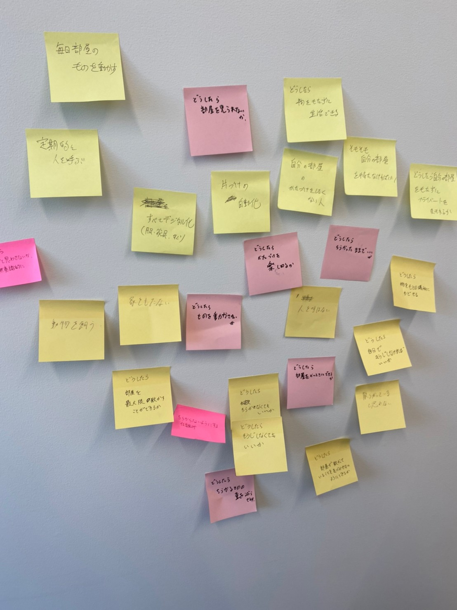

第3回
今回はモーターを使ったプログラミングに挑戦しました。
センサーを使い光の強さに応じてモーターの回転方向を変えるプログラミングにとても苦労しました。
これが使ったソースコードです↓
- const int DIR = 8;
- const int STEP = 9;
- void setup() {
- pinMode(DIR, OUTPUT);
- pinMode(STEP, OUTPUT);
- digitalWrite(DIR, LOW);
- digitalWrite(STEP, LOW);
- Serial.begin(9600);
- }
- void loop() {
- int val=0;
- val=analogRead(1);
- Serial.println(val);
- delay(5);
- if(val<200){
- clockwise(600);
- }else{
-
- counter_clockwise(600);
- }
-
- }
- void clockwise(int delaytime){
- digitalWrite(DIR, HIGH);//HIGHは時計回り
- digitalWrite(STEP, HIGH);
- delayMicroseconds(delaytime);
- digitalWrite(STEP, LOW);
- delayMicroseconds(delaytime);
- }
- void counter_clockwise(int delaytime){
- digitalWrite(DIR, LOW);//はLOWは反時計回り
- digitalWrite(STEP, HIGH);
- delayMicroseconds(delaytime);
- digitalWrite(STEP, LOW);
- delayMicroseconds(delaytime);
- }
（HMWとYes,and）のIdiation
